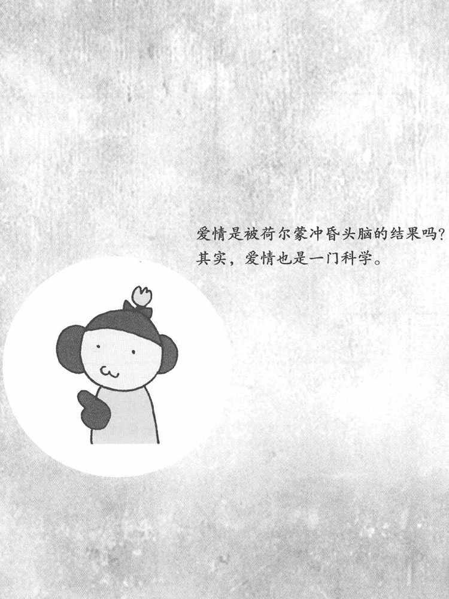

为什么政治家喜欢日式餐厅？
～政治家说服别人的秘诀——"餐桌技巧"～
政治家在晚上聚会时，大多会选择日式餐厅，这是为什么呢？日式餐厅多是独立的雅间，非常适合政治家们进行密谈，不过这只是原因之一。此外，政治家都很忙碌，吃饭的时间也不愿意浪费，他们会把餐桌当成办公的谈判桌。
可是，为什么偏偏钟爱日式餐厅呢？这其中是有原因的。首先，人在吃饭的时候谈事情，更容易赞成对方的观点。吃饭时，对方和自己一同分享美食，快乐和充实感是共有的，因此会对对方抱有好意。不仅如此，吃饭这一行为，可以使人放松，降低心理上的防备。再者，日式餐厅内的颜色也有使人放松的作用。米色或芥末色的墙壁，不仅可以进入眼睛令人心情放松，还能透过皮肤缓解肌肉的紧张，从而使人整个身心都放松下来。
在这种状态下，人更容易接受对方的观点。利用这种心理效果的技巧叫做"餐桌技巧"，这是政治家和公司的管理者经常使用的技巧。这种技巧不仅在日本常被使用，在美国的政治世界中也得到了广泛应用。
关于餐桌技巧，心理学家也进行过各种各样的实验。例如，有实验结果显示，与不吃东西时相比，人在吃东西时读评论文章，会向更好的方向去理解。很多企业会通过宴请客户或员工的方式，在餐桌上提出各种主张和要求。不过，最近这种技巧经常被心术不正的人所利用。比如，有些恶意的推销员，会请您吃饭，并在餐桌上瞅准时机对您进行劝诱。对于这类人，不要在意他们在吃饭前说的话，要对他们在吃饭过程中说的话提高警惕。如果能理解"餐桌技巧"，就能看清对方的意图，也就不会在餐桌上上当受骗了。

